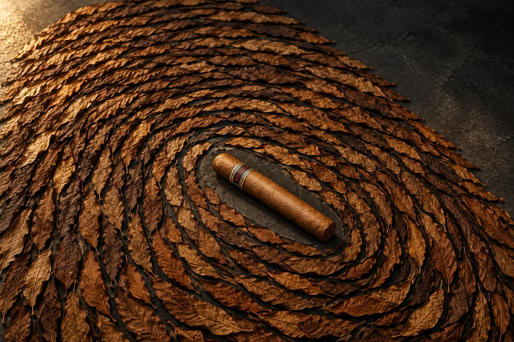
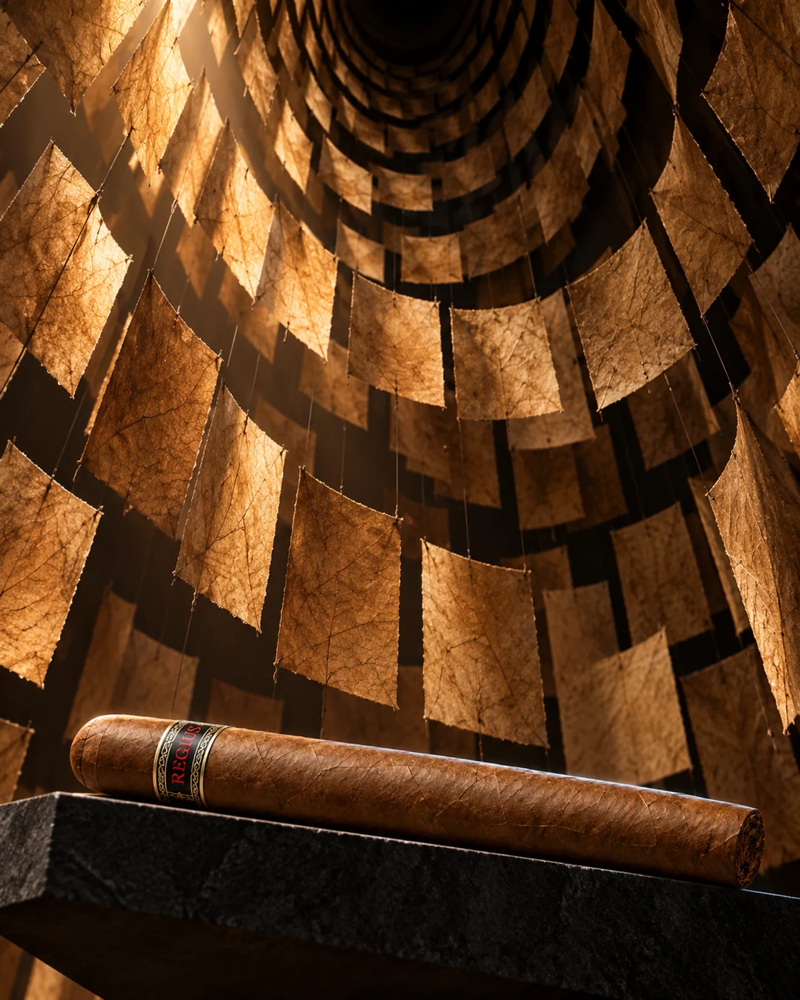
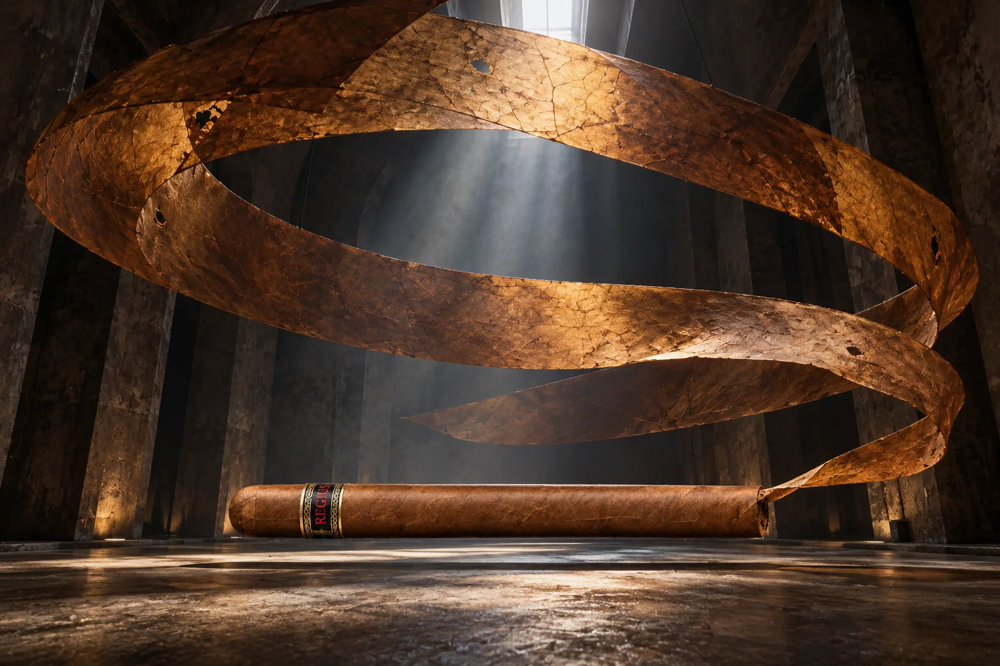

← All work
Tobacco · Unofficial adult brand study
REGIUS
Regius Double Corona: one leaf becomes a mark, a room and an impossible unfolding.

The idea
Cured leaf is the only expressive material. It gathers into a singular whorl, hangs as a chamber of translucent sheets, then leaves a cigar wrapper as a monumental continuous helix.
Making the world
Warm leaf against mineral black makes each transformation legible without smoke or lifestyle cues. The generated cigar carries a representative Regius-style band; an exact Double Corona band and product geometry were not verified.
The series

